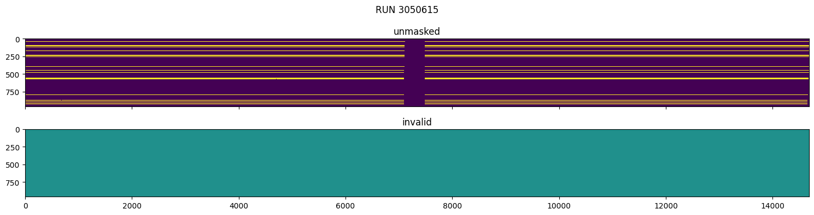
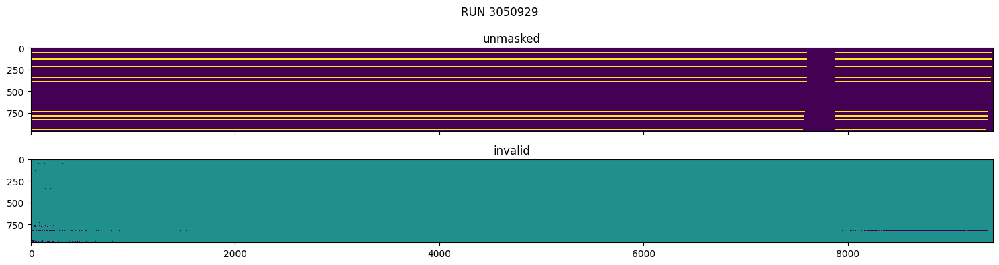

import dask
from qagmire.diagnostics import L1SpectrumMaskedValueCheck
from qagmire.diagnostics.l1_spectrum_masked_value_check import plot_unmasked_and_invalidL1 spectrum masked value check
Check that L1 pixels are masked where original counts are invalid.
Test GA-CALIB dataset
Red camera
red_tests = L1SpectrumMaskedValueCheck(camera="RED", n_processes=8)
red_tests.run(folder="GA-CALIB")Locating and converting where necessary: 0%| | 0/36 [00:00<?, ?it/s]Locating and converting where necessary: 100%|███████████████████████████████████████████████████████████████████████████| 36/36 [00:00<00:00, 3577.57it/s]
Reading netCDF files... took 1.57 s. Size is 15887.744 Mb
Tests took 2.30 s to prepare (including reading data).
Tests took 7.03 s to perform.
neg_flux_unmasked_in_RED_IVAR:
Are there unmasked pixels in IVAR where FLUX_NOSS is negative?
nlr_flux_unmasked_in_RED_IVAR:
Are there unmasked pixels in IVAR where FLUX_NOSS is non-linear?
neg_flux_unmasked_in_RED_IVAR_NOSS:
Are there unmasked pixels in IVAR_NOSS where FLUX_NOSS is negative?
nlr_flux_unmasked_in_RED_IVAR_NOSS:
Are there unmasked pixels in IVAR_NOSS where FLUX_NOSS is non-linear?red_tests.summary(by="RUN")4 varieties of test and 17280 tested elements per variety, for total of 69120 tests.
806 tests failed (1.17%) and 68314 tests passed (98.83%).| failed | total fails | ||||
|---|---|---|---|---|---|
| test | neg_flux_unmasked_in_RED_IVAR | neg_flux_unmasked_in_RED_IVAR_NOSS | nlr_flux_unmasked_in_RED_IVAR | nlr_flux_unmasked_in_RED_IVAR_NOSS | |
| RUN | |||||
| 3050615 | 32 | 32 | 0 | 0 | 64 |
| 3050886 | 29 | 29 | 0 | 0 | 58 |
| 3051214 | 29 | 29 | 0 | 0 | 58 |
| 3050611 | 27 | 27 | 0 | 0 | 54 |
| 3050926 | 27 | 27 | 0 | 0 | 54 |
| 3050924 | 26 | 26 | 0 | 0 | 52 |
| 3051212 | 25 | 25 | 0 | 0 | 50 |
| 3050638 | 23 | 23 | 0 | 0 | 46 |
| 3050640 | 22 | 22 | 0 | 0 | 44 |
| 3050890 | 22 | 22 | 0 | 0 | 44 |
| 3051210 | 21 | 21 | 0 | 0 | 42 |
| 3050636 | 20 | 20 | 0 | 0 | 40 |
| 3050888 | 19 | 19 | 0 | 0 | 38 |
| 3050613 | 18 | 18 | 0 | 0 | 36 |
| 3051176 | 17 | 17 | 1 | 1 | 36 |
| 3050928 | 17 | 17 | 0 | 0 | 34 |
| 3051174 | 17 | 17 | 0 | 0 | 34 |
| 3051172 | 11 | 11 | 0 | 0 | 22 |
red_tests.summary(by="NSPEC")4 varieties of test and 17280 tested elements per variety, for total of 69120 tests.
806 tests failed (1.17%) and 68314 tests passed (98.83%).| failed | total fails | ||||
|---|---|---|---|---|---|
| test | neg_flux_unmasked_in_RED_IVAR | neg_flux_unmasked_in_RED_IVAR_NOSS | nlr_flux_unmasked_in_RED_IVAR | nlr_flux_unmasked_in_RED_IVAR_NOSS | |
| NSPEC | |||||
| 561 | 8 | 8 | 0 | 0 | 16 |
| 333 | 7 | 7 | 0 | 0 | 14 |
| 647 | 6 | 6 | 0 | 0 | 12 |
| 651 | 6 | 6 | 0 | 0 | 12 |
| 729 | 6 | 6 | 0 | 0 | 12 |
| ... | ... | ... | ... | ... | ... |
| 825 | 1 | 1 | 0 | 0 | 2 |
| 828 | 1 | 1 | 0 | 0 | 2 |
| 850 | 0 | 0 | 1 | 1 | 2 |
| 903 | 1 | 1 | 0 | 0 | 2 |
| 933 | 1 | 1 | 0 | 0 | 2 |
158 rows × 5 columns
Blue camera
blue_tests = L1SpectrumMaskedValueCheck(camera="BLUE", n_processes=8)
blue_tests.run(folder="GA-CALIB")Locating and converting where necessary: 0%| | 0/36 [00:00<?, ?it/s]Locating and converting where necessary: 100%|███████████████████████████████████████████████████████████████████████████| 36/36 [00:00<00:00, 3718.63it/s]
Reading netCDF files... took 0.94 s. Size is 15887.744 Mb
Tests took 1.48 s to prepare (including reading data).
Tests took 5.99 s to perform.
neg_flux_unmasked_in_BLUE_IVAR:
Are there unmasked pixels in IVAR where FLUX_NOSS is negative?
nlr_flux_unmasked_in_BLUE_IVAR:
Are there unmasked pixels in IVAR where FLUX_NOSS is non-linear?
neg_flux_unmasked_in_BLUE_IVAR_NOSS:
Are there unmasked pixels in IVAR_NOSS where FLUX_NOSS is negative?
nlr_flux_unmasked_in_BLUE_IVAR_NOSS:
Are there unmasked pixels in IVAR_NOSS where FLUX_NOSS is non-linear?blue_tests.summary(by="RUN")4 varieties of test and 17280 tested elements per variety, for total of 69120 tests.
3738 tests failed (5.41%) and 65382 tests passed (94.59%).| failed | total fails | ||
|---|---|---|---|
| test | neg_flux_unmasked_in_BLUE_IVAR | neg_flux_unmasked_in_BLUE_IVAR_NOSS | |
| RUN | |||
| 3050929 | 150 | 150 | 300 |
| 3050927 | 138 | 138 | 276 |
| 3051215 | 131 | 131 | 262 |
| 3050925 | 114 | 114 | 228 |
| 3050889 | 113 | 113 | 226 |
| 3050891 | 113 | 113 | 226 |
| 3051175 | 108 | 108 | 216 |
| 3050616 | 107 | 107 | 214 |
| 3051213 | 106 | 106 | 212 |
| 3050887 | 105 | 105 | 210 |
| 3050612 | 98 | 98 | 196 |
| 3050614 | 91 | 91 | 182 |
| 3050637 | 90 | 90 | 180 |
| 3051211 | 90 | 90 | 180 |
| 3050641 | 88 | 88 | 176 |
| 3051173 | 85 | 85 | 170 |
| 3051177 | 78 | 78 | 156 |
| 3050639 | 64 | 64 | 128 |
blue_tests.summary(by="NSPEC")4 varieties of test and 17280 tested elements per variety, for total of 69120 tests.
3738 tests failed (5.41%) and 65382 tests passed (94.59%).| failed | total fails | ||
|---|---|---|---|
| test | neg_flux_unmasked_in_BLUE_IVAR | neg_flux_unmasked_in_BLUE_IVAR_NOSS | |
| NSPEC | |||
| 396 | 12 | 12 | 24 |
| 561 | 12 | 12 | 24 |
| 623 | 12 | 12 | 24 |
| 832 | 12 | 12 | 24 |
| 620 | 10 | 10 | 20 |
| ... | ... | ... | ... |
| 857 | 1 | 1 | 2 |
| 863 | 1 | 1 | 2 |
| 898 | 1 | 1 | 2 |
| 916 | 1 | 1 | 2 |
| 946 | 1 | 1 | 2 |
523 rows × 3 columns
Details
There is one spectrum (in red camera) in which there is a single pixel above the chosen non-linearity threshold of 60000, but which is not masked. The few pixels with higher values (presumably at least 65535) are masked, but they are not capped at 65535.
n_nlr = (
(red_tests.data["RED_FLUX_NOSS"] > 60000)
& (red_tests.data["RED_FLUX_NOSS"] < 65535)
).sum()
n_sat = (red_tests.data["RED_FLUX_NOSS"] >= 65535).sum()
val_sat = (
red_tests.data["RED_FLUX_NOSS"]
.where(red_tests.data["RED_FLUX_NOSS"] >= 65535)
.mean()
)
n_nlr, n_sat, val_sat = (x.to_numpy() for x in dask.compute(n_nlr, n_sat, val_sat))
print(
f"There are {n_nlr} pixels between 60000 and 65535, "
f"and {n_sat} pixels with a value of at least 65535, "
f"with an average value of {val_sat}."
)There are 1 pixels between 60000 and 65535, and 3 pixels with a value of at least 65535, with an average value of 72913.21875.It is relatively common for spectra (especially in the blue camera) to have negative values that are not masked.
plot_unmasked_and_invalid(red_tests, 3050615)
plot_unmasked_and_invalid(blue_tests, 3050929)
